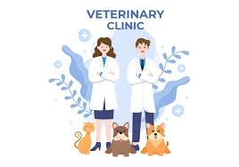

It is a secret but not a secret, my real dream is a veterinarian. I love animals, all animals excluding snakes.
I studied hard in my Form 3 to get into the science stream so I could take science courses and I got science stream but my mother didn't let me continue it, she wants to be be fashion designer and told me that I couldn’t afford to study maths, chemistry, and biology.
I tried my best to stay in that class, but just like you know, I changed it because I had a bad allergy to animals. So I gave up my dream, but I'm still dreaming of opening my animal motel.